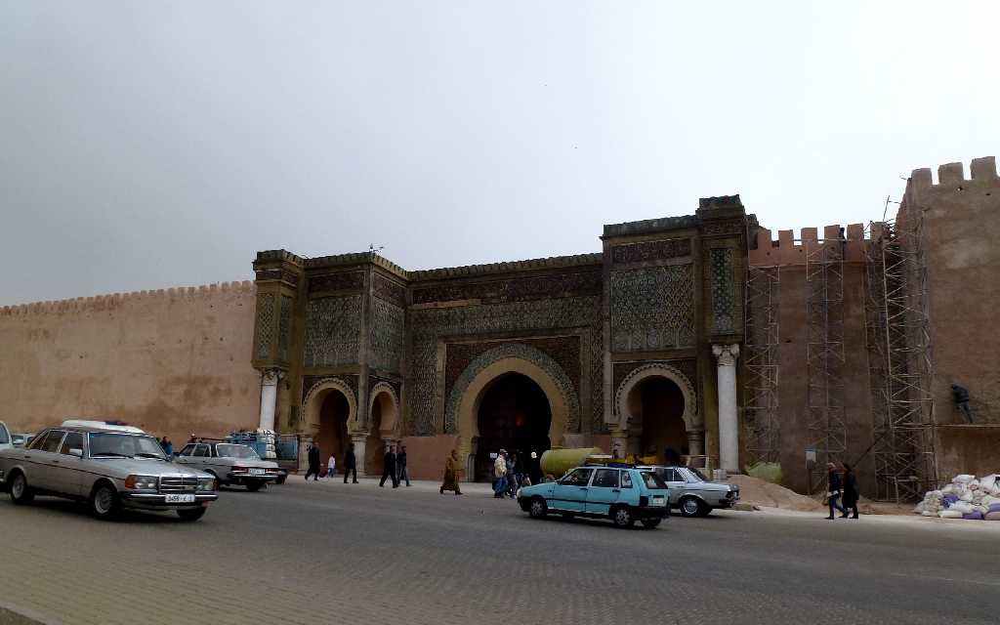
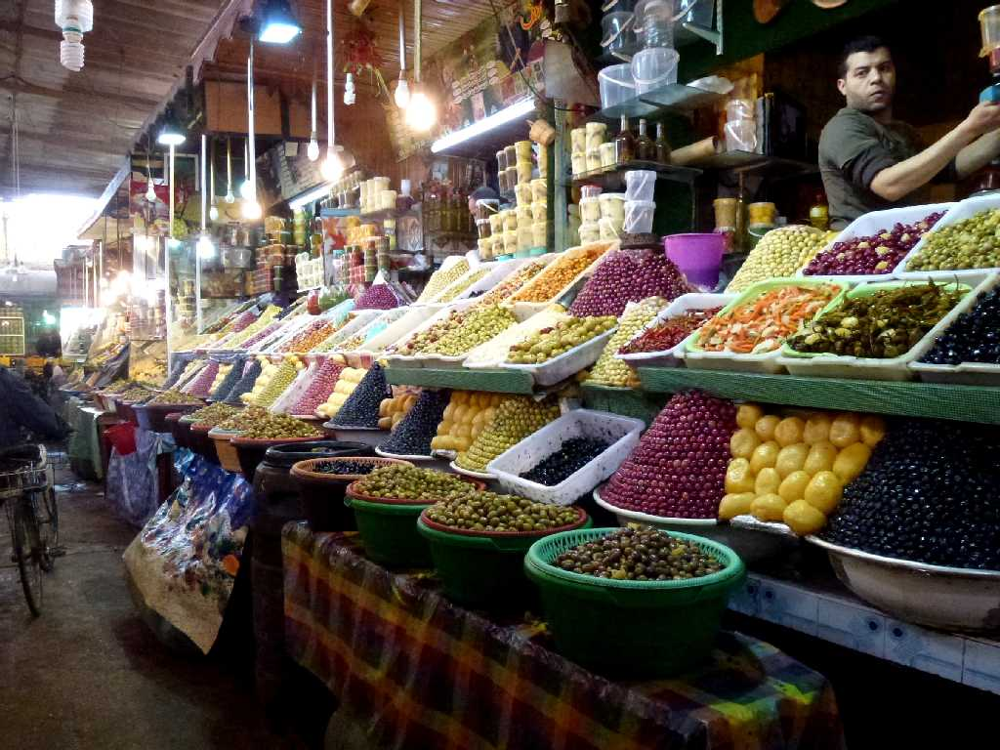
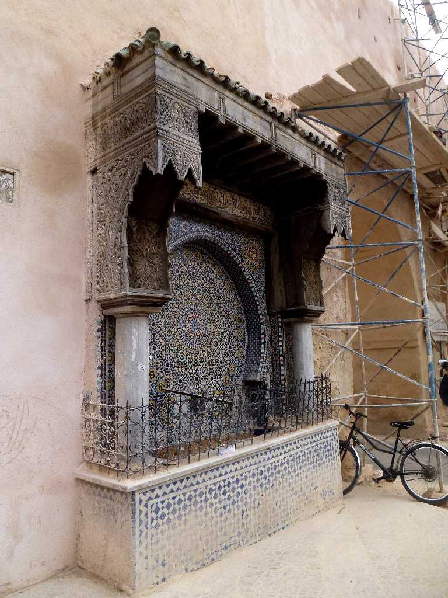
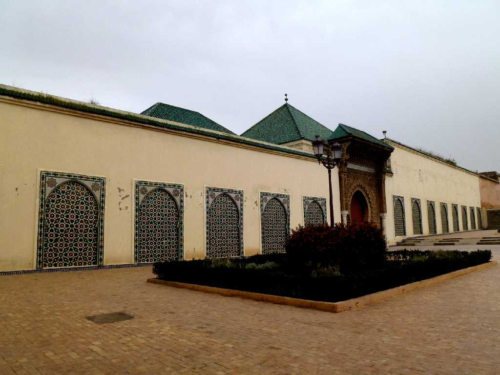
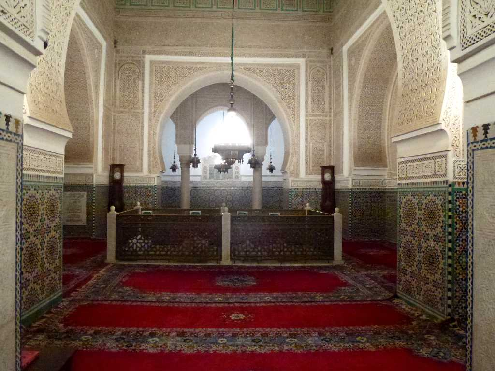
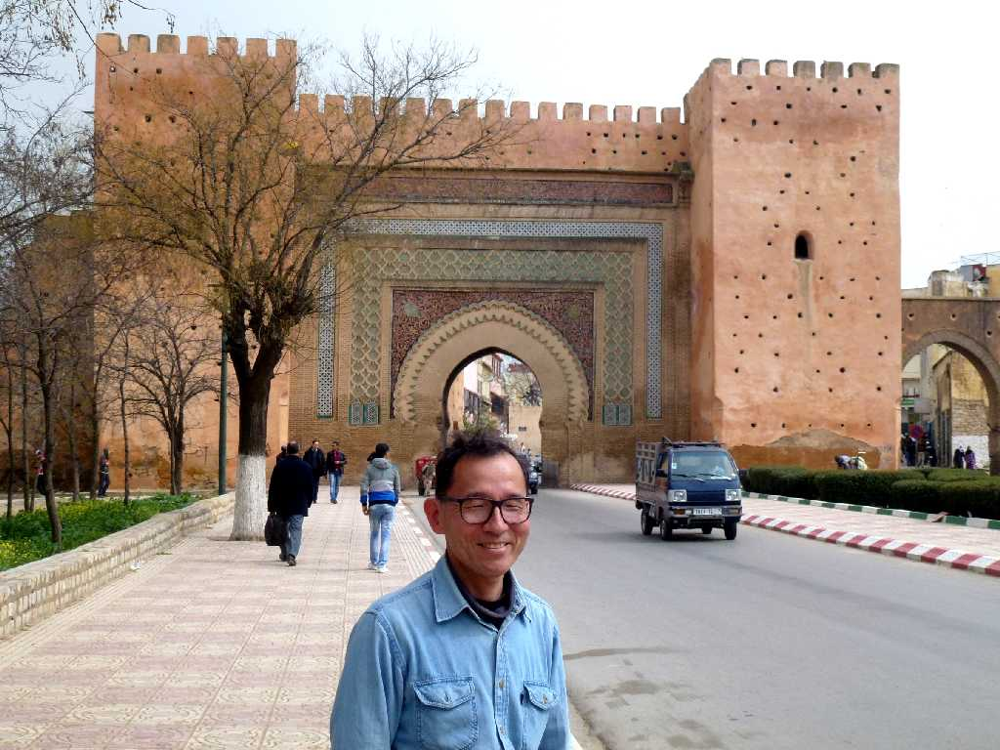

Bab Mansour Gate Plaza el Hedim Meknes
マンスールが設計したモザイクタイルと彫刻が美しくアフリカで最も美しい門と云われるマンスール門
Decoration Bab Mansour Gate Meknes

Souk Plaza el Hedim Meknes
１６７５年から１７２８年までアラウィー朝の首都が置かれたメクネスのスーク

Fontaine Publique Medina Meknes
旧市街に残る泉

Mausoleum of Mouley Ismail Meknes
メクネスが最も栄えた１７世紀のムーレイイスマイル王の廟

Mausoleum of Mouley Ismail Meknes

March 10 2014 Bab el Khemis Gate Meknes